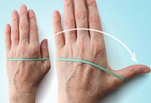

Thumb Extension

Strengthening the muscles of your thumbs can help you grab and lift heavy things like cans and bottles.
• Put your hand flat on a table. Wrap a rubber band around your hand at the base of your finger joints.
• Gently move your thumb away from your fingers as far as you can.
• Hold for 30 to 60 seconds and release.
• Repeat 10 to 15 times with both hands. You can do this exercise two to three times a week, but rest your hands for 48 hours in between sessions.